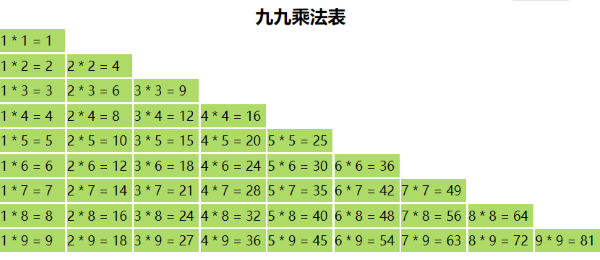

使用数据项的 id - 每个数据项需要携带 id 字段属性
为数据创建时间戳 - now()
使用数据项的序号 index
使用数据项 item
obj:[
{id:0, name:'gl', year:1995},
{id:1, name:'sh', year:2005},
{id:2, name:'nj', year:2008}
],
arr: [1, 2, 3, 4, 5]
<view wx:for="{{9}}" wx:key="index"> {{item}} </view>
<view wx:for="{{obj}}" wx:key="item"> {{item.name}}- {{item.year}} </view>
<view wx:for="{{arr}}" wx:key="id"> {{item}} </view>
<view class="item" wx:for="{{arr}}" wx:key="index" wx:for-item='i'>
<text wx:for="{{i+1}}" wx:key="index" wx:for-item='j'>
<text class="item" wx:if="{{j>0}}">{{j}} * {{i}} = {{i*j}} </text>
</text>
</view>

obj:{id:100,name:'glpla',gender:'male'}
<block wx:for="{{obj}}" wx:key="index">
<view>{{index}}</view>
<view>{{item}}</view>
</block>
错误 - 不支持基本操作
<view wx:for="{{arr.slice(0,3)}}" wx:key="index">{{item}}</view>
正确
<view wx:for="{{arr}}" wx:key="index" wx:if="{{index<3}}">{{item}}</view>
<block wx:for="{{arr}}" wx:key="index">
<view wx:if="{{index<3}}">{{item}}</view>
</block>